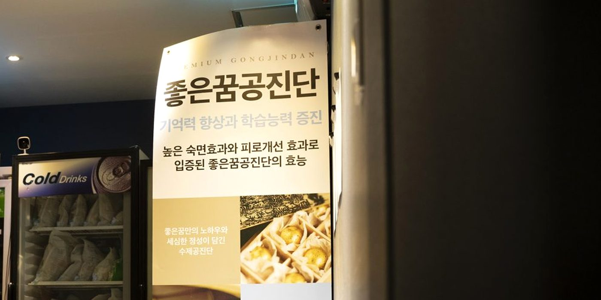

조영기 수석진료원장의 약력과 소개된 진료 분야는 무엇인가요?
한 줄 답변
조영기 수석진료원장은 추나요법과 통증재활을 진료 분야로 소개하며, 원광대학교 한의과대학원 석사 및 박사와 병원 통증재활과·신경내과 진료원장 등의 이력이 프로필 카드에 기재되어 있습니다.
조영기 수석진료원장은 추나요법과 통증재활을 진료 분야로 소개하며, 원광대학교 한의과대학원 석사 및 박사와 병원 통증재활과·신경내과 진료원장 등의 이력이 프로필 카드에 기재되어 있습니다.
좋은꿈참사랑한의원 노량진점의 조영기 수석진료원장은 한의원의 프로필 카드에 아래와 같이 소개되어 있습니다.
소개된 이력
- 현) 좋은꿈참사랑한의원 수석진료원장
- 현) 좋은꿈 네트워크 추나의학 학술이사
- 전) 강남 광동한방병원 통증재활과 진료원장
- 전) 종로 춘원당한방병원 신경내과 진료원장
- 육군특수전사령부 제1공수특전여단 한방군의관
- 원광대학교 부속 한방병원 임상조교수
- 원광대학교 부속 한방병원 내과전문의
- 원광대학교 한의과대학원 석사 및 박사
위 내용은 프로필 카드 기준이며, 재직 상황은 달라질 수 있습니다.
진료 분야로 소개된 영역
추나요법과 통증재활입니다. 한의원에서는 불편한 동작을 먼저 묻고, 아픈 곳을 넓게 살핀 뒤 필요하다고 판단될 때 침, 약침, 추나를 연결합니다.
- [교정추나 안내](chuna-correction-guide)
- [초음파 진단 안내](ultrasound-guide)
- [교통사고 후 불편 글](accident-first-week-care)
처음 방문하실 때
통증으로 오실 때는 [어디가 언제부터 아픈지 메모](how-to-note-symptoms)와 가지고 있는 [MRI·X-ray 자료](bring-mri-xray-to-visit)가 있으면 가져오세요.
이런 증상은 먼저 확인이 필요합니다
- 외상 후 다리나 팔에 힘이 빠지는 경우
- 배변이나 배뇨가 갑자기 어려워진 경우
- 발열과 함께 심한 허리 통증이 있는 경우
자주 묻는 질문
추나는 몇 번 받아야 하나요?
상태에 따라 달라 진찰 후 안내하며 정해진 횟수를 약속하지 않습니다.
추나가 보험이 되나요?
적용 여부는 진찰 후 안내합니다. ([추나 건강보험 안내](chuna-insurance-coverage-overview))
이 글은 일반적인 건강 정보이며 개인의 진단이나 치료를 대신하지 않습니다. 증상이 있거나 복용 중인 약이 있다면 진료를 통해 확인하세요. 치료 효과는 개인마다 다를 수 있습니다.
지난 이야기부터 이어서 묻습니다
좋은꿈참사랑한의원 노량진점은 재진 때 지난번 이야기부터 이어서 여쭙니다. 진료시간과 예약은 오시는 길에서 확인하세요.
좋은꿈참사랑한의원 노량진점은 재진 때 지난번 이야기부터 이어서 여쭙니다. 진료시간과 예약은 오시는 길에서 확인하세요.